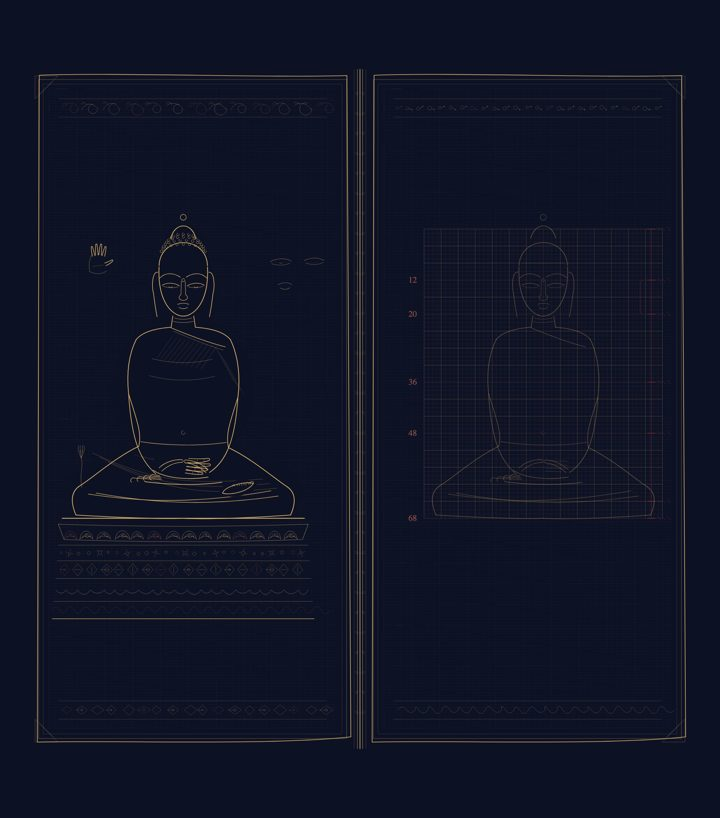
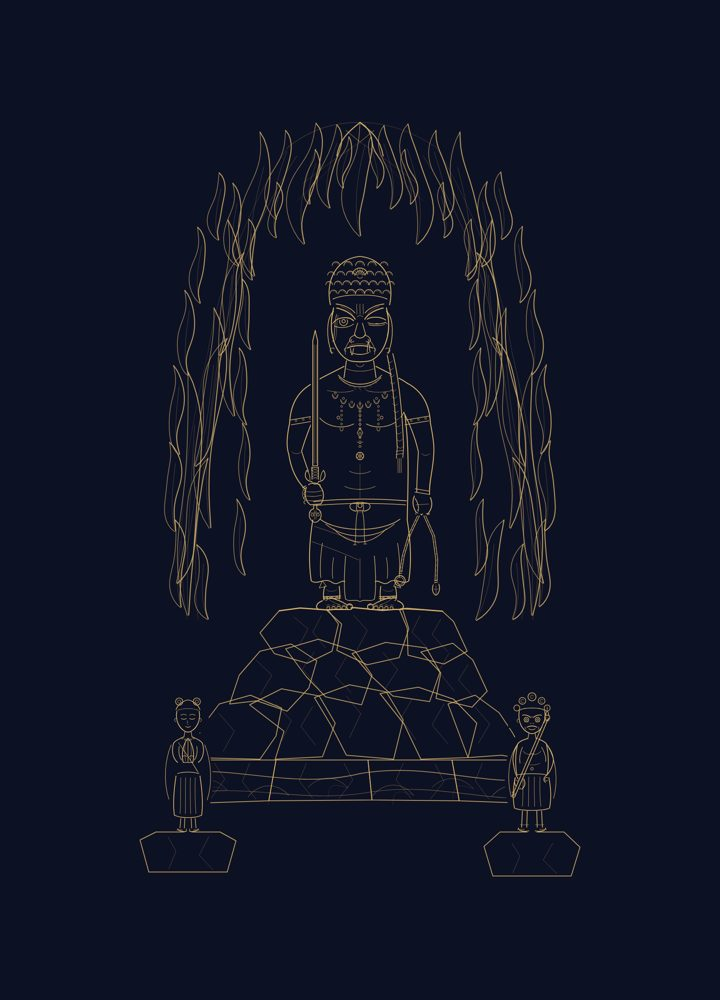
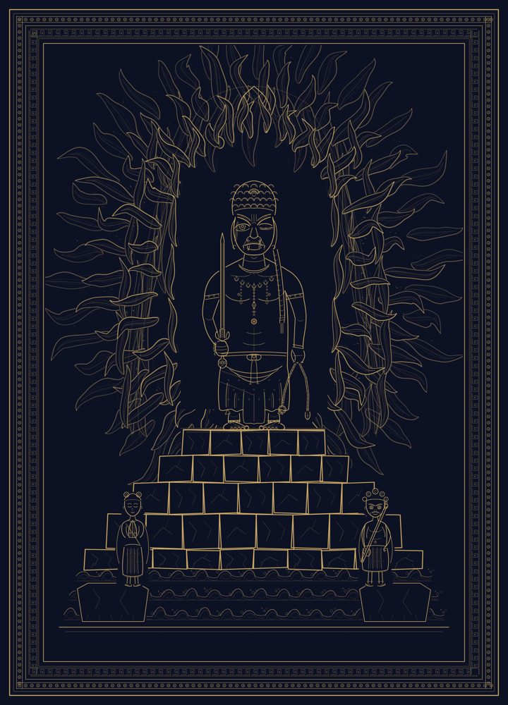
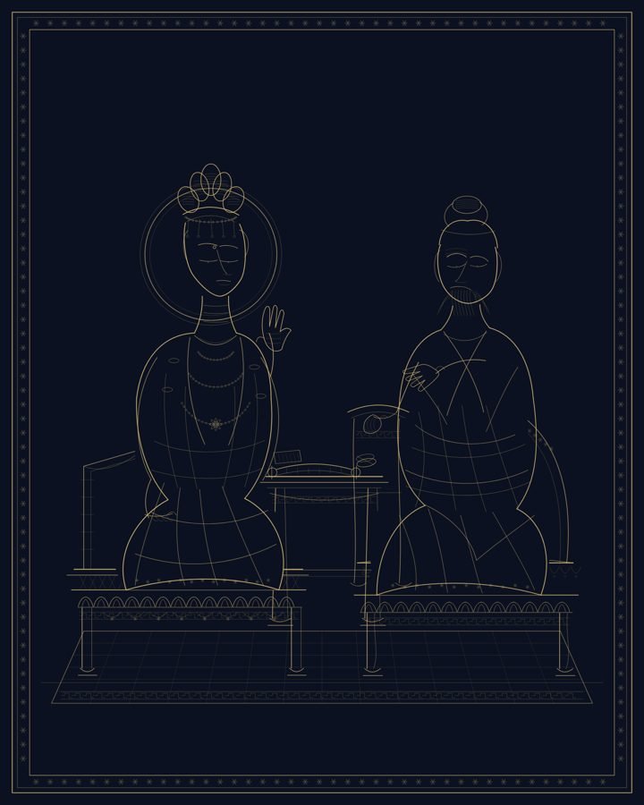
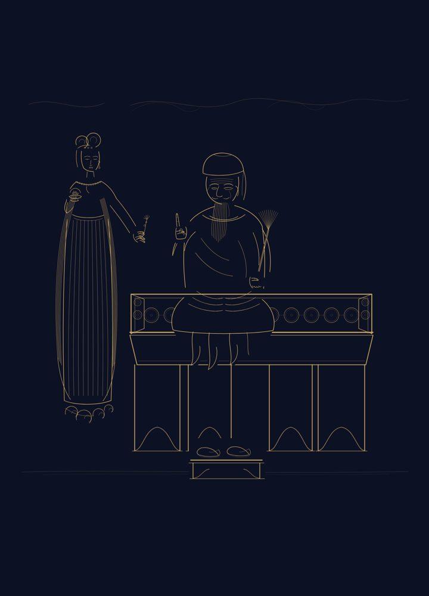
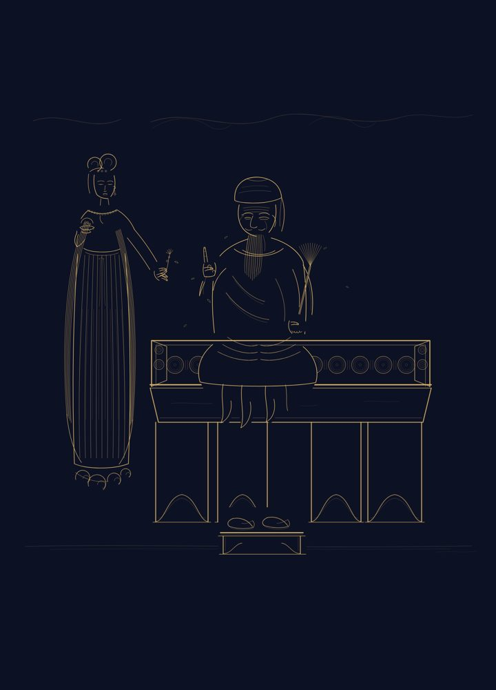

← 歸展覽館
歷代稿存檔廊
主人之令（2026-07-13）：凡完整之嘗試皆值一記，不必抹去。此廊自倉史掘出諸席歷代全稿——
每一稿皆一次完整之嘗試，各具其時之風。各幀有 ID（席名＋卷碼）：指某幅告知其 ID，
即可自倉史溯取全圖為參，或據以再精。縮圖藏 圖錄/存檔/，全圖永存於卷。
退役之世系亦以「退役線」與原線同圖並陳，俾其可見。
尼瓦爾-thyasaphu摺頁期
ID: 尼瓦爾-thyasaphu摺頁期-5408a2c2026-07-12 · 全圖可以 ID 溯取

ID: 尼瓦爾-thyasaphu摺頁期-24d078e2026-07-13 · 全圖可以 ID 溯取
ID: 尼瓦爾-thyasaphu摺頁期-7f0b6902026-07-13 · 全圖可以 ID 溯取
尼瓦爾-康提式
ID: 尼瓦爾-康提式-58034e92026-07-12 · 全圖可以 ID 溯取
ID: 尼瓦爾-康提式-5408a2c2026-07-12 · 全圖可以 ID 溯取
ID: 尼瓦爾-康提式-1e5e6092026-07-13 · 全圖可以 ID 溯取
ID: 尼瓦爾-康提式-b5fc7b82026-07-13 · 全圖可以 ID 溯取
尼瓦爾-蒲甘壁畫期
ID: 尼瓦爾-蒲甘壁畫期-5408a2c2026-07-12 · 全圖可以 ID 溯取
ID: 尼瓦爾-蒲甘壁畫期-55f91622026-07-13 · 全圖可以 ID 溯取
ID: 尼瓦爾-蒲甘壁畫期-7f0b6902026-07-13 · 全圖可以 ID 溯取
東密-唐請來原本期
ID: 東密-唐請來原本期-5408a2c2026-07-12 · 全圖可以 ID 溯取
ID: 東密-唐請來原本期-b23b85a2026-07-13 · 全圖可以 ID 溯取
ID: 東密-唐請來原本期-5d47f242026-07-13 · 全圖可以 ID 溯取
東密-鎌倉大成期
 ID: 東密-鎌倉大成期-5408a2c2026-07-12 · 全圖可以 ID 溯取
ID: 東密-鎌倉大成期（退役線）-2f2eb422026-07-13 · 全圖可以 ID 溯取
ID: 東密-鎌倉大成期-5408a2c2026-07-12 · 全圖可以 ID 溯取
ID: 東密-鎌倉大成期（退役線）-2f2eb422026-07-13 · 全圖可以 ID 溯取

ID: 東密-鎌倉大成期-289086b2026-07-13 · 全圖可以 ID 溯取

ID: 東密-鎌倉大成期-f1de5912026-07-14 · 全圖可以 ID 溯取
杳眇-星迴虛空藏
ID: 杳眇-星迴虛空藏-fc4145c2026-07-14 · 全圖可以 ID 溯取
ID: 杳眇-星迴虛空藏-8c2e6412026-07-14 · 全圖可以 ID 溯取
杳眇-琉璃地
ID: 杳眇-琉璃地-037213c2026-07-15 · 全圖可以 ID 溯取
漢地-唐吳家樣
 ID: 漢地-唐吳家樣-5408a2c2026-07-12 · 全圖可以 ID 溯取
ID: 漢地-唐吳家樣（退役線）-4b7500f2026-07-13 · 全圖可以 ID 溯取
ID: 漢地-唐吳家樣-4b7500f2026-07-13 · 全圖可以 ID 溯取
ID: 漢地-唐吳家樣-c25c9ac2026-07-14 · 全圖可以 ID 溯取
ID: 漢地-唐吳家樣-5408a2c2026-07-12 · 全圖可以 ID 溯取
ID: 漢地-唐吳家樣（退役線）-4b7500f2026-07-13 · 全圖可以 ID 溯取
ID: 漢地-唐吳家樣-4b7500f2026-07-13 · 全圖可以 ID 溯取
ID: 漢地-唐吳家樣-c25c9ac2026-07-14 · 全圖可以 ID 溯取
漢地-宋白描
 ID: 漢地-宋白描-5408a2c2026-07-12 · 全圖可以 ID 溯取
ID: 漢地-宋白描-5408a2c2026-07-12 · 全圖可以 ID 溯取

ID: 漢地-宋白描（退役線）-16d841c2026-07-13 · 全圖可以 ID 溯取

ID: 漢地-宋白描-16d841c2026-07-13 · 全圖可以 ID 溯取

ID: 漢地-宋白描-53c119f2026-07-14 · 全圖可以 ID 溯取
ID: 漢地-宋白描-6c737d32026-07-15 · 全圖可以 ID 溯取
漢地-明水陸
ID: 漢地-明水陸-5408a2c2026-07-12 · 全圖可以 ID 溯取
 ID: 漢地-明水陸（退役線）-5619a832026-07-13 · 全圖可以 ID 溯取
ID: 漢地-明水陸（退役線）-5619a832026-07-13 · 全圖可以 ID 溯取
 ID: 漢地-明水陸-5619a832026-07-13 · 全圖可以 ID 溯取
ID: 漢地-明水陸（退役線）-1cf2ddd2026-07-14 · 全圖可以 ID 溯取
ID: 漢地-明水陸-1cf2ddd2026-07-14 · 全圖可以 ID 溯取
ID: 漢地-明水陸-5619a832026-07-13 · 全圖可以 ID 溯取
ID: 漢地-明水陸（退役線）-1cf2ddd2026-07-14 · 全圖可以 ID 溯取
ID: 漢地-明水陸-1cf2ddd2026-07-14 · 全圖可以 ID 溯取
犍陀羅-哈達灰泥期
ID: 犍陀羅-哈達灰泥期-5408a2c2026-07-12 · 全圖可以 ID 溯取
ID: 犍陀羅-哈達灰泥期-4dae6d82026-07-13 · 全圖可以 ID 溯取
ID: 犍陀羅-哈達灰泥期-b5fc7b82026-07-13 · 全圖可以 ID 溯取
ID: 犍陀羅-哈達灰泥期-5d47f242026-07-13 · 全圖可以 ID 溯取
犍陀羅-斯瓦特餘脈
 ID: 犍陀羅-斯瓦特餘脈-5408a2c2026-07-12 · 全圖可以 ID 溯取
ID: 犍陀羅-斯瓦特餘脈（退役線）-289086b2026-07-13 · 全圖可以 ID 溯取
ID: 犍陀羅-斯瓦特餘脈-289086b2026-07-13 · 全圖可以 ID 溯取
ID: 犍陀羅-斯瓦特餘脈-39ba2b72026-07-14 · 全圖可以 ID 溯取
ID: 犍陀羅-斯瓦特餘脈-5408a2c2026-07-12 · 全圖可以 ID 溯取
ID: 犍陀羅-斯瓦特餘脈（退役線）-289086b2026-07-13 · 全圖可以 ID 溯取
ID: 犍陀羅-斯瓦特餘脈-289086b2026-07-13 · 全圖可以 ID 溯取
ID: 犍陀羅-斯瓦特餘脈-39ba2b72026-07-14 · 全圖可以 ID 溯取
藏地-勉薩
ID: 藏地-勉薩-db1ea372026-07-12 · 全圖可以 ID 溯取
ID: 藏地-勉薩-5408a2c2026-07-12 · 全圖可以 ID 溯取
ID: 藏地-勉薩-286c7012026-07-13 · 全圖可以 ID 溯取
ID: 藏地-勉薩-b5fc7b82026-07-13 · 全圖可以 ID 溯取
藏地-噶瑪嘎孜
ID: 藏地-噶瑪嘎孜-db1ea372026-07-12 · 全圖可以 ID 溯取
ID: 藏地-噶瑪嘎孜-5408a2c2026-07-12 · 全圖可以 ID 溯取
ID: 藏地-噶瑪嘎孜-b93a4652026-07-13 · 全圖可以 ID 溯取
ID: 藏地-噶瑪嘎孜-e6b596a2026-07-14 · 全圖可以 ID 溯取
藏地-欽孜
ID: 藏地-欽孜-5408a2c2026-07-12 · 全圖可以 ID 溯取
 ID: 藏地-欽孜（退役線）-2f2eb422026-07-13 · 全圖可以 ID 溯取
ID: 藏地-欽孜-2f2eb422026-07-13 · 全圖可以 ID 溯取
ID: 藏地-欽孜-99013002026-07-14 · 全圖可以 ID 溯取
ID: 藏地-欽孜（退役線）-2f2eb422026-07-13 · 全圖可以 ID 溯取
ID: 藏地-欽孜-2f2eb422026-07-13 · 全圖可以 ID 溯取
ID: 藏地-欽孜-99013002026-07-14 · 全圖可以 ID 溯取
藏地-齊烏崗巴
ID: 藏地-齊烏崗巴-58034e92026-07-12 · 全圖可以 ID 溯取
ID: 藏地-齊烏崗巴-5408a2c2026-07-12 · 全圖可以 ID 溯取
ID: 藏地-齊烏崗巴-f273dd32026-07-13 · 全圖可以 ID 溯取
ID: 藏地-齊烏崗巴-5d47f242026-07-13 · 全圖可以 ID 溯取